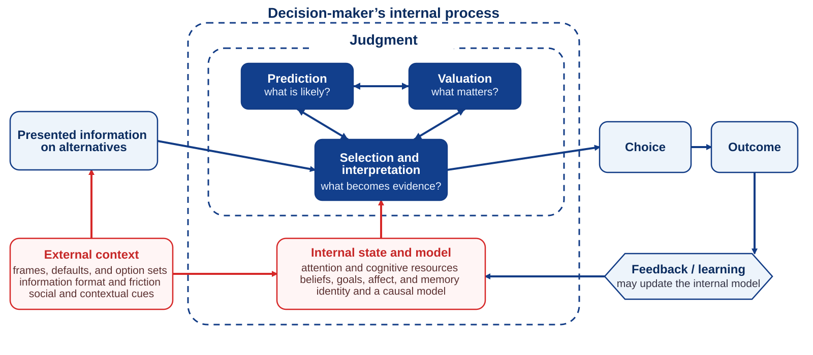

1 How Decisions Should Be Made—and How They Actually Are
A rational benchmark is not a psychological portrait
“Economics needs two completely different types of theories: normative and descriptive.”
— Richard H. Thaler, “From Cashews to Nudges”, 2018, p. 1267
Learning goals
After reading this chapter, you should be able to:
- Distinguish normative, descriptive, and prescriptive questions about the same decision.
- State the rational-choice benchmark without double-counting constraints or treating the choice rule as another substantive input.
- Explain why context-sensitive choice challenges a thin rational model as a stand-alone description without treating every contextual effect as irrational.
- Map a visible choice onto the process through which it was already being made.
One decision, two questions
Return to the hiring committee in the preface. At 3:17 p.m., the chair asks for a vote. Two candidates remain. The visible decision is a name. The first question is straightforward:
How should the committee decide?
A defensible process would identify the feasible candidates and any other feasible course of action, such as extending the search, collecting a work sample, redesigning the role, or making a conditional offer. It would predict the consequences of each alternative using job-relevant evidence. It would clarify what the organization values: immediate performance, learning, leadership, reliability, diversity of expertise, retention, or some combination. It would then choose the feasible alternative expected to produce the most valued consequences.
Now ask a different question:
How will the committee actually decide?
One candidate may have become the early favorite. A vivid story may receive more attention than a reliable but unremarkable indicator. The word fit may mean one thing to the chair and another to the future supervisor. A prestigious employer may be treated as evidence without anyone stating what it predicts. A confident senior colleague may speak first, causing junior members to revise or conceal their judgments. The option of extending the search may never enter the discussion. By the time the vote is called, much of the decision may already have been made.
These are not two versions of the same question. The first asks for a standard. The second asks for a causal explanation. Decision science needs both, and it needs a third question that connects them.
Three questions of decision science
Normative, descriptive, and prescriptive are not three kinds of people or three mutually exclusive theories. They are three questions we can ask about the same decision.
| Perspective | Central question | Standard of success |
|---|---|---|
| Normative | How should the decision be made under stated assumptions? | Coherence, evidence-responsive beliefs, legitimate objectives, and fit between means and ends. |
| Descriptive | How are judgments and choices actually formed? | Empirical accuracy about attention, interpretation, option construction, prediction, valuation, action, and learning. |
| Prescriptive | How can the actual process be improved? | Better calibration, consistency, fairness, implementation, contestability, and learning, given real human capacities and environments. |
A normative analysis of hiring asks which consequences matter, what evidence should influence the decision, and which alternatives are feasible and legitimate. A descriptive analysis asks how order, prestige, similarity, confidence, emotion, social hierarchy, and an early favorite influence the committee’s judgments. A prescriptive analysis asks whether criteria should be defined in advance, work samples compared, judgments recorded independently, disagreements diagnosed, and later performance used to test the original forecasts.
The three questions need one another. A standard without a behavioral account may demand capacities people do not possess. A behavioral regularity without a standard cannot tell us whether anything should change. An intervention without either may change behavior while making the decision less informed, less fair, or less accountable.
How a decision should be made
A rational-choice model offers a deliberately thin answer to the normative question. In its most basic form, the decision-maker faces a set of feasible alternatives, ranks them, and chooses a highest-ranked alternative. For decisions whose consequences are uncertain, it is useful to unpack that ranking into three substantive inputs (von Neumann & Morgenstern, 1944; Edwards, 1954).
Feasible alternatives: What courses of action can actually be taken?
Beliefs or predictions about consequences: What may follow from each alternative, with what likelihood, timing, and uncertainty?
Values or preferences over consequences: How desirable, undesirable, important, fair, meaningful, or unacceptable would those consequences be?
Beliefs and values together support an overall ranking of the feasible alternatives. Rational choice then means selecting a highest-ranked feasible alternative.
The same benchmark can be expressed as a decision loop. Information about alternatives helps the decision-maker represent the feasible set. Beliefs support predictions about what may follow from each alternative. Preferences and values guide the valuation of those predicted consequences. Choice selects among the alternatives treated as feasible, and the outcome can provide evidence for a later decision.

Judgment, prediction, valuation, and choice
The loop makes four terms easier to distinguish.
- Judgment is the formation of assessments that inform choice. In this book, judgment includes analytically distinct predictive and evaluative assessments.
- Prediction asks what may happen if an alternative is pursued, with what likelihood, timing, and uncertainty. Prediction applies beliefs to a particular alternative; it is not identical to the broader set of beliefs a person holds.
- Valuation asks how desirable, undesirable, important, fair, meaningful, or acceptable the predicted consequences would be. Values and preferences guide valuation; valuation is the assessment through which those values enter this decision.
- Choice selects a course of action from the alternatives treated as feasible. Choice is narrower than decision-making, and choosing does not guarantee implementation.
These mappings are close but not identities. Information about alternatives is not the feasible set itself: the feasible set consists of actions that can genuinely be taken, whereas the information available to a decision-maker may omit, distort, or invent possibilities. The simplified loop also compresses the path from choice to action. An outcome follows only when a choice is implemented in a world that contains uncertainty, other people, and events outside the decision-maker’s control. Feedback can improve a later judgment, but it does not automatically produce learning.
Expected utility is one formal representation of consequence-based choice under risk; it is not the only way to express the benchmark.
Two clarifications matter.
First, constraints determine feasibility. Budget, law, time, authority, technology, physical capacity, contractual commitments, and other limits help define which alternatives are genuinely available. They should not be counted again as a fourth independent input after the feasible set has been defined. In practice, however, decision-makers may exclude an option that is feasible but not recognized as such. Chapter 2 therefore distinguishes genuine constraints from assumed or negotiable ones.
Second, once beliefs and values have generated an overall ranking, the choice rule is not another substantive input. The rule is simply to choose a highest-ranked feasible alternative. Conditions such as completeness and transitivity concern whether preferences can be represented coherently; they are properties of the ranking. Under uncertainty, stronger representations require additional assumptions. Appendix A states those assumptions explicitly, and Risky Decision-Making develops expected utility, certainty equivalents, and risk premia.
The benchmark is powerful because it separates disagreements that ordinary language often hides. Two colleagues may agree about what matters but disagree about the probability of success. They may agree about the forecast but value the consequences differently. They may agree about both while recognizing different alternatives as feasible. Words such as best, fit, safe, and risky can conceal all three disagreements.
The model does not require selfishness. Values may include family welfare, dignity, fairness, environmental consequences, loyalty, moral duties, future generations, or the interests of other affected people. Nor does it require emotional coldness. Emotion can provide information about what matters. Rational choice also does not supply a complete moral theory. A choice may consistently advance one person’s objectives while violating another person’s rights. Legitimate objectives, affected parties, and procedural justice therefore cannot simply be hidden inside an unexplained score.
Most importantly, the model is a benchmark, not yet a psychological portrait. It tells us how the ingredients of a coherent consequence-based choice should relate once the alternatives, beliefs, and values have been specified. It does not tell us how alternatives become visible, which evidence receives attention, how that evidence is interpreted, or why beliefs and values change with context. The seven examples that follow test those descriptive assumptions.
From a normative benchmark to descriptive predictions
A normative model generates descriptive predictions only after we add assumptions about stability. Suppose that two presentations leave the feasible alternatives, predicted consequences, values, and action costs unchanged. A thin rational-choice account then predicts that the choice should also remain unchanged.
Several conditional predictions follow:
- Description invariance: complementary descriptions of the same consequences should not reverse preference when they convey the same information and are understood as equivalent.
- Menu independence: adding an alternative that nobody prefers should not change the ranking of existing alternatives merely because the menu changed. In probabilistic choice models, the related regularity condition says that adding an option should not increase an existing option’s choice probability.
- Default neutrality under genuinely equal conditions: a nominal starting point should not matter if effort, recommendation, responsibility, consequences, and action costs are all unchanged.
- Independence from irrelevant cues: a visual cue, a product name in the news, or a photograph of eyes should not change choice unless it changes beliefs, values, feasibility, or action costs.
- State stability: if the consequences and the person’s values are unchanged, a temporary internal state should not reverse the ranking.
These are demanding conditions because actual decisions rarely arrive with their ingredients already defined. Some of the seven examples that follow challenge an invariance or regularity condition relatively directly. Others show that a thin model omitted effort, inaction, social meaning, accessibility, or current motive. The aim is not to declare people irrational seven times. It is to ask whether the benchmark, without a richer account of process, predicts what people actually do.
Seven ways context enters choice
Representation and comparison
1. The same treatment data, framed through survival or mortality
McNeil, Pauker, Sox, and Tversky (1982) presented information about surgery and radiation therapy for lung cancer to ambulatory patients with chronic illnesses, graduate students, and physicians. Different groups received outcome data framed in terms of survival or mortality. The cumulative probabilities and time horizons were complementary, yet surgery was relatively more attractive in the survival frame.
A thin rational model treats the descriptions as different ways of presenting the same consequences. If the event, denominator, horizon, and implications are understood as equivalent, preference should not change merely because one description foregrounds living and another foregrounds dying. The observed shift is therefore a comparatively direct challenge to description invariance.
The boundary matters. Participants imagined the treatment decision; the study did not observe signed consent by patients facing an immediate diagnosis. Nor does it show that every positive frame increases risk taking. The more precise result is that complementary descriptions can produce different representations of the same outcome data, and those representations can alter treatment preference. Framing develops the mechanism and the ethical response.
2. The subscription option nobody chose
A well-known classroom demonstration presented three subscription options: web-only access, print-only access, and print plus web access. The print-only option cost the same as the combined offer and was therefore dominated by it. Ariely (2008) reported that nobody in the classroom group chose the print-only option, yet its presence shifted choices toward the combined offer. When the dominated option was removed, web-only access became much more popular.
The exact counts came from a classroom demonstration reported in a trade book, not from customer sales at The Economist. The stronger scientific foundation is the attraction-effect literature. Adding an asymmetrically dominated alternative can increase the share choosing an existing target, contrary to regularity in standard menu-independent models (Huber et al., 1982).
The decoy does not improve the target’s objective attributes. It changes the comparison. The effect is neither universal nor fixed in size; it depends on the alternatives, attribute structure, comprehension, task, and population. Even so, it shows that value is not always retrieved from stable preferences and applied to a menu. The menu can help construct the comparison through which value becomes visible. When Context Rewrites Comparison develops the evidence and mechanism.
The path from intention to action
3. Organ donation and the consequence of doing nothing
An organ-donation form can require people to opt in, presume participation unless they opt out, or require an active choice. Johnson and Goldstein (2003) found large differences in stated agreement across online experimental defaults. Formal freedom to select either response remained, but the consequence of doing nothing did not.
This case is not a pure invariance test between costless equivalents. A default can alter effort, perceived recommendation, normality, responsibility, anticipated regret, and the outcome of postponement. It may therefore change the decision-relevant environment rather than merely relabel it.
The outcome must also be named precisely. Stated agreement is not registration; registration is not a recovered organ; and recovered organs are not completed transplants. A longitudinal analysis of five countries that changed from opt-in to opt-out found no average increase in deceased donation after the policy switch, emphasizing the importance of clinical capacity, public trust, family involvement, and implementation (Dallacker et al., 2024). Choice Architecture treats a default as one component of a system.
4. A right-pointing arrow and a more visible action path
In 2012, Google changed text advertisements on its Display Network by adding a clickable right-pointing arrow while also changing typography, spacing, and layout. The advertised hotel or product did not become objectively better because the arrow appeared, but the route from seeing the offer to clicking it became more salient. Google reported higher clicks after the redesign (Land & Yuan, 2012).
This example does not identify an independent arrow effect or a violation of rational choice. The public report describes a bundled corporate redesign: the arrow, typography, spacing, and layout changed together, and the report disclosed neither a separate arrow effect nor an effect size, profit result, or measure of informed user welfare.
Its narrower lesson is nevertheless useful. A preference can exist without becoming action. Attention, visibility, friction, and affordance lie between evaluating an option and implementing it. A model that predicts clicks solely from the value of the advertised product omits the interface through which intention becomes behavior. Choice Architecture returns to the case as a design problem.
What the seven examples establish—and what they do not
| Example | What changed—and why it matters | Evidence boundary |
|---|---|---|
| Lung-cancer treatment frame | Complementary survival and mortality descriptions shifted treatment preference; representation can alter valuation. | Controlled framing study; hypothetical treatment choice, not signed consent. |
| Subscription decoy | A dominated option shifted choice toward the target; the comparison set can construct relative value. | Attraction effect has experimental support; exact classroom counts were not market sales. |
| Organ-donation default | Stated agreement changed with the default; inaction, effort, recommendation, and responsibility enter choice. | Stated consent is not transplantation; policy effects depend on the wider system. |
| Advertising redesign | Clicks reportedly increased after a bundled redesign; visibility and affordance affect implementation. | Corporate report; the arrow was not isolated and no effect size or welfare measure was reported. |
| Watched eyes | Contributions rose in one small field setting; social meaning may enter beliefs and values. | Later meta-analyses found no reliable overall generosity effect. |
| Mars publicity | Sales reportedly rose during Mars publicity; accessibility may influence consideration and evaluation. | Anecdote with serious alternative explanations. |
| Museum message | Message effectiveness changed across induced states; active motives shape interpretation and valuation. | Factorial advertising experiment; ratings, not attendance; mechanism not uniquely identified. |
The correct conclusion is not that the rational-choice benchmark is useless, nor that every contextual influence is irrational. In several examples, context plausibly changed a real component of the choice: effort, the consequence of inaction, perceived recommendation, social consequences, or current goals. A sufficiently enriched rational model can represent such changes.
But this observation exposes the central descriptive problem rather than solving it. A model that treats alternatives, beliefs, and values as given can represent choice after those inputs have been specified. It does not explain how the inputs were selected, represented, inferred, or revised. If every unexpected result is accommodated by adding a new preference or belief after the fact, the account becomes flexible in explanation and weak in prediction. This is the process problem that bounded-rationality research made central (Simon, 1955).
The seven examples therefore support a precise claim:
Rational choice is a valuable normative benchmark, but a thin rational-choice model is a poor stand-alone descriptive and predictive model of actual decision-making.
It does not by itself tell us:
- which feasible alternatives will be noticed, generated, or taken seriously;
- which consequences will become mentally available;
- how descriptions will be interpreted;
- how probabilities will be inferred from incomplete evidence;
- how comparison, reference points, emotion, identity, and social meaning will shape value;
- how an emerging preference will become action; or
- how outcomes will later be remembered and used for learning.
To answer those questions, we must open the black box between situation and choice.
How decisions are actually made
When people explain a decision, they usually begin near the end: “I chose the consulting job because it had better prospects”; “We hired her because she was the strongest candidate”; “I bought the product because it offered the best value.” These explanations may contain genuine reasons. They are rarely the whole causal story.
Before the choice became visible, some information entered attention and other information did not. The information was interpreted through prior beliefs, goals, language, memory, and context. Some alternatives appeared while others remained unconstructed. Consequences were predicted with varying confidence. Those anticipated consequences acquired value. Options were compared, a commitment was made, and an action path either translated the preference into behavior or blocked it. The result then entered memory and feedback through another round of selection and interpretation.
The visible choice is therefore the endpoint of hidden work. The seven examples do not require abandoning the first loop. They require opening it. In actual decisions, people do not receive a complete feasible set, neutral information, fully formed beliefs, and stable preferences. External context shapes what is presented and how easily it can be acted upon. Internal states and prior models shape what is selected and interpreted. Prediction and valuation can revise one another, and an outcome becomes learning only after another round of attention and interpretation.

Figure fig-behavioral-decision-loop is a functional teaching synthesis, not a claim that every decision follows fixed, conscious, sequential stages or that the complete diagram has been validated as one universal psychological model. The functions may overlap, recur, become compressed through practice, or be distributed across people and technologies. The arrows show possible dependencies and routes of influence.
Two features require special attention. First, “presented information on alternatives” is not a complete menu. Alternatives may be overlooked, ruled out without examination, or constructed during the decision itself. In the book’s fuller navigation map, this work appears explicitly as construct options. Second, the choice box compresses commitment and implementation. Defaults, friction, authority, and opportunity can change whether a preference becomes action without changing which option initially seems best.
Read from left to right, the figure therefore opens into the book’s recurring functional map: context and information → notice and interpret → construct options → predict → value → choose, commit, and act → observe and learn. Prediction and valuation often iterate. A new forecast can make another option imaginable; recognizing what matters can change the evidence sought. Feedback may update the model, reinforce an existing account, or fail to correct it.
The seven examples can now be located more precisely:
- framing enters interpretation and can change the representation of consequences;
- a decoy enters comparison and can change relative valuation;
- a default changes the path from choice to action, especially the consequence of inaction;
- an interface cue changes attention and affordance;
- watched eyes may change social interpretation and predicted consequences;
- repeated publicity may change what enters the consideration set; and
- an active motive can change interpretation and valuation.
The process model does not replace the normative benchmark. It explains where the benchmark’s inputs come from and why they may be unstable. Chapter 2 turns that diagnosis into practical work: define the decision, construct the feasible set, name the opportunity cost, separate predictions from values, seek information that can change action, and test whether the recommendation is robust (Milkman et al., 2009).
Outcome is not process
A good decision can produce a bad outcome, and a poor decision can produce a favorable one. Uncertainty separates process quality from result quality.
An investor may buy after one enthusiastic post and make money. Another may diversify on defensible evidence and lose during an unexpected market shock. A surgeon can recommend the treatment best supported at the time and still encounter a rare complication. Outcome bias judges the earlier decision mainly by its result; hindsight bias makes the result seem more predictable after it occurs (Baron & Hershey, 1988; Fischhoff, 1975).
Feedback therefore does not automatically create learning. A useful review reconstructs what was known, which alternatives were considered, what was predicted, what mattered, and what could have changed the decision. A dated record protects the earlier judgment from a narrator who already knows the ending. The Narrator After Choice develops that problem; Decision Hygiene turns it into organizational practice.
One architecture across the book
The rest of the book develops one architecture across increasingly social problems.
Choice within a mind. Influence across minds. Agreement between interdependent minds.
In individual choice, a person manages a model of the situation: what is happening, what is possible, what is likely, and what matters. In persuasion, one person tries to change what another notices, believes, values, or feels able to do. In communication, people make their models mutually testable. In negotiation, interdependent parties construct a joint path while retaining alternatives and the ability to refuse. In behavior design and choice architecture, environments make some paths visible, easy, normal, or difficult. Decision hygiene then turns the entire loop into a process that can learn.
The practical and ethical question is the same throughout:
Which part of whose decision process is being changed, on what evidence, toward whose objective, and with what opportunity to question, refuse, or revise it?
The hiring decision, mapped once
| Function and diagnostic question | Common failure | Practical response |
|---|---|---|
| Notice and interpret: What becomes evidence, and what does it mean? | Treating available information as noticed, comparable, and self-explanatory | Specify relevant evidence, present it comparably, and state the inference |
| Construct options: What can be done? | Treating the first visible menu as complete | Add assessment, redesign, delay, negotiation, staged commitment, or renewed search where feasible |
| Predict: What is likely to happen? | Confusing warmth, hope, fear, prestige, or confidence with predictive validity | Use base rates, work samples, ranges, and disconfirming evidence |
| Value: What matters, to whom, and how much? | Hiding value conflicts inside best or fit | Name objectives, affected parties, trade-offs, and non-negotiable limits |
| Choose, commit, and act: Which feasible path will be taken? | Allowing order or hierarchy to determine comparison; ignoring implementation | Record judgments before discussion and specify the action path, owner, timing, and safeguards |
| Observe and learn: What happened, and what should change? | Equating outcome with process quality | Preserve forecasts and review prediction, implementation, and luck separately |
Practice Lab
Choose one consequential decision that has not yet been finalized.
- Write two short accounts. The first answers How should this decision be made? The second answers How is it actually being made?
- Identify one normative, one descriptive, and one prescriptive question.
- State the feasible alternatives, beliefs about their consequences, and values over those consequences. Show how constraints determine feasibility rather than listing them as another preference input.
- Use the seven examples as diagnostic prompts. Could framing, comparison, a default, an action path, a social cue, accessibility, or current motive be changing the choice?
- Draw the decision loop. Mark one function where the actual process is most vulnerable and one piece of evidence that would change your current recommendation.
Take it forward
- Use this when: a visible choice makes the process that produced it disappear, or a normative model is treated as if it were a literal account of human psychology.
- Do not infer: that rational choice is useless, that every contextual effect is irrational, or that an explanation invented after an outcome provides a strong prediction.
- Try this next: before asking which option is best, ask how the alternatives, beliefs, and values entered the decision in the first place.
References cited in this chapter
Ariely, D. (2008). Predictably irrational: The hidden forces that shape our decisions. HarperCollins.
Baron, J., & Hershey, J. C. (1988). Outcome bias in decision evaluation. Journal of Personality and Social Psychology, 54(4), 569–579. https://doi.org/10.1037/0022-3514.54.4.569
Bateson, M., Nettle, D., & Roberts, G. (2006). Cues of being watched enhance cooperation in a real-world setting. Biology Letters, 2(3), 412–414. https://doi.org/10.1098/rsbl.2006.0509
Berger, J., & Fitzsimons, G. (2008). Dogs on the street, Pumas on your feet: How cues in the environment influence product evaluation and choice. Journal of Marketing Research, 45(1), 1–14. https://doi.org/10.1509/jmkr.45.1.1
Dallacker, M., Appelius, L., Brandmaier, A. M., Morais, A. S., & Hertwig, R. (2024). Opt-out defaults do not increase organ donation rates. Public Health, 236, 436–440. https://doi.org/10.1016/j.puhe.2024.08.009
Edwards, W. (1954). The theory of decision making. Psychological Bulletin, 51(4), 380–417.
Fischhoff, B. (1975). Hindsight is not equal to foresight: The effect of outcome knowledge on judgment under uncertainty. Journal of Experimental Psychology: Human Perception and Performance, 1(3), 288–299. https://doi.org/10.1037/0096-1523.1.3.288
Grant, T. (1997, July 21). On a Mars mission. The Washington Post.
Griskevicius, V., Goldstein, N. J., Mortensen, C. R., Sundie, J. M., Cialdini, R. B., & Kenrick, D. T. (2009). Fear and loving in Las Vegas: Evolution, emotion, and persuasion. Journal of Marketing Research, 46(3), 384–395. https://doi.org/10.1509/jmkr.46.3.384
Huber, J., Payne, J. W., & Puto, C. (1982). Adding asymmetrically dominated alternatives: Violations of regularity and the similarity hypothesis. Journal of Consumer Research, 9(1), 90–98. https://doi.org/10.1086/208899
Johnson, E. J., & Goldstein, D. G. (2003). Do defaults save lives? Science, 302(5649), 1338–1339. https://doi.org/10.1126/science.1091721
Land, J., & Yuan, S. (2012, December 3). Enhancing text ads on the Google Display Network. Inside AdSense. https://adsense.googleblog.com/2012/12/enhancing-text-ads-on-google-display.html
McNeil, B. J., Pauker, S. G., Sox, H. C., Jr., & Tversky, A. (1982). On the elicitation of preferences for alternative therapies. New England Journal of Medicine, 306(21), 1259–1262. https://doi.org/10.1056/NEJM198205273062103
Milkman, K. L., Chugh, D., & Bazerman, M. H. (2009). How can decision making be improved? Perspectives on Psychological Science, 4(4), 379–383.
Northover, S. B., Pedersen, W. C., Cohen, A. B., & Andrews, P. W. (2017). Artificial surveillance cues do not increase generosity: Two meta-analyses. Evolution and Human Behavior, 38(1), 144–153. https://doi.org/10.1016/j.evolhumbehav.2016.07.001
Simon, H. A. (1955). A behavioral model of rational choice. The Quarterly Journal of Economics, 69(1), 99–118.
Thaler, R. H. (2018). From cashews to nudges: The evolution of behavioral economics. American Economic Review, 108(6), 1265–1287. https://doi.org/10.1257/aer.108.6.1265
von Neumann, J., & Morgenstern, O. (1944). Theory of games and economic behavior. Princeton University Press.
Social meaning, accessibility, and active motive
5. Eyes above an honesty box
Bateson, Nettle, and Roberts (2006) alternated photographs of eyes and flowers above a price list beside an honesty box in one university coffee room. Across ten weekly observations, contributions per unit of milk consumed were nearly three times higher during eye-image weeks. Prices, beverages, and the payment rule remained the same, but a cue associated with observation may have changed the perceived social situation.
The unit of analysis was a weekly aggregate in one small setting, not an individually randomized measure of each person’s honesty. More importantly, two later meta-analyses found no reliable overall increase in generosity from artificial surveillance cues (Northover et al., 2017). The scientifically useful lesson is therefore an evidence update, not a design slogan that eyes reliably make people honest.
A narrow self-interest model may treat the image as irrelevant. A richer model can include perceived observability, reputation, norms, shame, or social preferences. But a model that adds these factors only after seeing the result has explained more than it predicted. Cooperation and Social Preferences presents the original result beside the later cumulative evidence.
6. Mars publicity and Mars-bar accessibility
News reports in 1997 linked rising sales of Mars bars to intense publicity around NASA’s Pathfinder mission. The bar’s name came from its creator’s family name, not the planet, so the story offers an intuitive accessibility hypothesis: repeated references to Mars may have made the product name easier to retrieve.
The account is not a controlled study. Mars said sales had been rising for about a year, the available report does not provide a usable time series or comparison group, and other market changes could have contributed (Grant, 1997). Berger and Fitzsimons (2008) later used the story to motivate experiments on environmental cues, accessibility, product evaluation, and choice, but those experiments do not retroactively identify the cause of the 1997 sales pattern.
The case belongs here as a lesson in both decision-making and causal inference. A product can become easier to recall without changing its attributes. That accessibility may influence the consideration set or make evaluation easier. But an association that fits a mechanism is not yet evidence that the mechanism caused the outcome. Accessibility, Familiarity, and Ease supplies the experimentally grounded concepts.
7. The same museum, a different active motive
Griskevicius and colleagues (2009) independently manipulated an induced state—fear, romantic desire, or a neutral condition—and the appeal used in advertisements for a museum or Las Vegas. Appeals based on behavioral social proof—many people visit—or distinctiveness—stand out from the crowd—changed in effectiveness across the induced states. Fear made behavioral social proof relatively more persuasive and distinctiveness less persuasive; romantic desire produced the opposite pattern in the reported evaluations.
The venue did not change, but responses depended on the factorial interaction between an induced motivational state and the appeal. The outcome was a persuasion or product-desirability index, not actual museum attendance. The student sample, short induction, and task constrain generalization, and the evolutionary-functional explanation is not uniquely established against every goal-congruence or learned-association account.
The experiment nevertheless illustrates why an option has no fixed value outside the model through which it is interpreted. The same venue can promise safety, belonging, novelty, or distinction depending on the person’s active concerns. A thin model can represent this by changing values, but it does not predict when and how those values will change. Valuation develops state-dependent value.